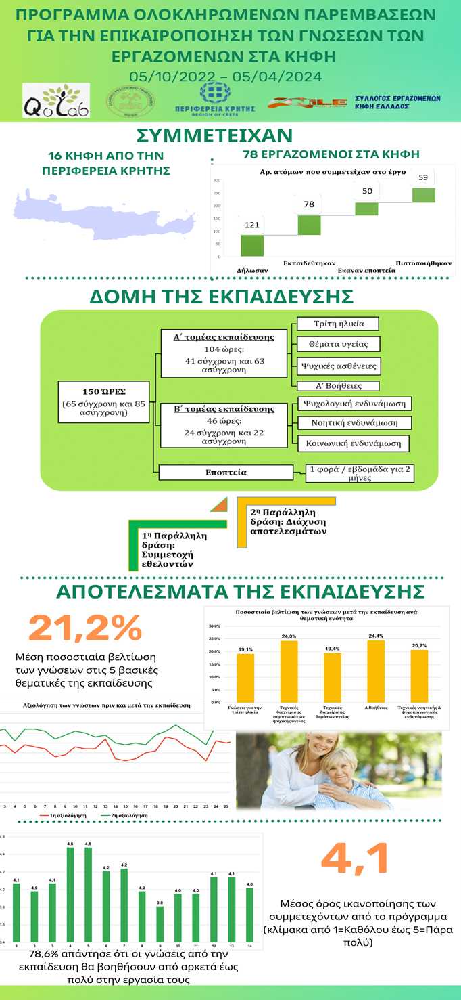

Χρηματοδότηση / Διάρκεια: Περιφέρεια Κρήτης (05/10/2022 – 05/03/2024)
Επιστ. Υπεύθυνη: Αργυρούλα Καλαϊτζάκη
Υλοποίηση: Συνεργασία δύο εργαστηρίων του Ελληνικού Μεσογειακού Πανεπιστημίου (ΕΛΜΕΠΑ): Εργαστήριο Διεπιστημονικής Προσέγγισης για τη Βελτίωση της Ποιότητας Ζωής (QoLab) και Εργαστήριο Φυσικών Διαδραστικών Εκπαιδευτικών Παιχνιδιών και Περιβάλλοντων (NILE) και του Συλλόγου Εργαζομένων ΚΗΦΗ Ελλάδος.
Σκοπός και στόχοι του έργου: Εκπαίδευση των επαγγελματιών υγείας - εργαζομένων στα Κέντρα Ημερήσιας Φροντίδας Ηλικιωμένων (ΚΗΦΗ) της Περιφέρειας Κρήτης, για την επικαιροποίηση των γνώσεων και την ενίσχυση των δεξιοτήτων τους, σε θέματα σωματικής και ψυχικής υγείας με περαιτέρω σκοπό τη βελτίωση της ψυχοκοινωνικής, νοητικής λειτουργικότητας και της ποιότητας ζωής των ηλικιωμένων.
Ωφελούμενοι: Επαγγελματίες υγείας – εργαζόμενοι στα Κέντρα Ημερήσιας Φροντίδας Ηλικιωμένων (ΚΗΦΗ) της Περιφέρειας Κρήτης
Δομή του έργου:

Χρηματοδότηση / Διάρκεια: Περιφέρεια Κρήτης (05/02/2021 – 31/12/2022)
Επιστ. Υπεύθυνη: Αργυρούλα Καλαϊτζάκη
Υλοποίηση: Συνεργασία δύο εργαστηρίων του Ελληνικού Μεσογειακού Πανεπιστημίου (ΕΛΜΕΠΑ): Εργαστήριο Διεπιστημονικής Προσέγγισης για τη Βελτίωση της Ποιότητας Ζωής (QoLab) και Εργαστήριο Φυσικών Διαδραστικών Εκπαιδευτικών Παιχνιδιών και Περιβάλλοντων (NILE).
Σκοπός και στόχοι του έργου:
Ωφελούμενοι:
Δομή του έργου:
Χρηματοδότηση / Διάρκεια: Ερευνώ – Δημιουργώ – Καινοτομώ (29/09/2020 έως 28/03/2023)
Υλοποίηση: Ελληνικό Μεσογειακό Πανεπιστήμιο (ΕΛΜΕΠΑ), TechApps Healthier, INNOSENSE Informatics IKE
Σκοπός και στόχοι του έργου: Δημιουργία ενός έξυπνου, κινητού, ψηφιακού προσωπικού βοηθού για την αυτοδιαχείριση ηλικιωμένων ατόμων με χρόνιες ασθένειες, με περαιτέρω στόχο την προαγωγή της αυτονομίας και ανεξάρτητης διαβίωσης (the Healthier)